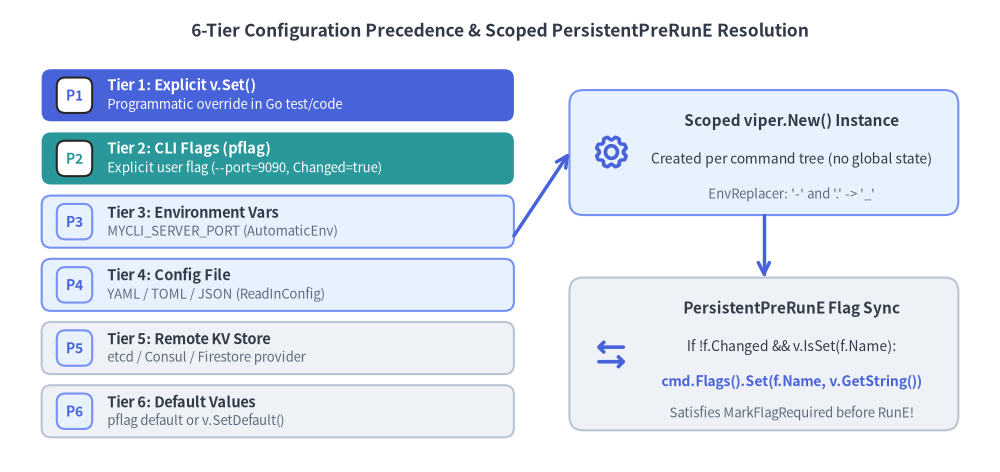
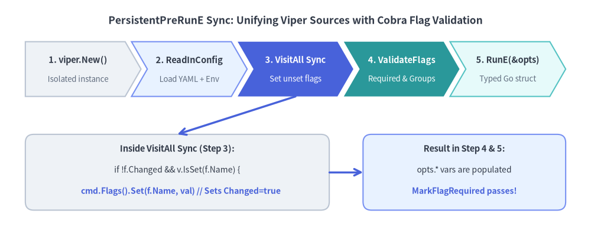

6-Tier Config Precedence & Viper Binding
Modern twelve-factor CLIs accept configuration from multiple sources simultaneously: command-line flags, environment variables, workspace configuration files (.mycli.yaml), remote key/value stores, and compiled defaults. Cobra was designed alongside spf13/viper, yet naive integration using init() and the global viper singleton is the single most common source of race conditions and flag-shadowing bugs in Go CLIs.

Source Code
from drawlib.canvas import save, setup
from drawlib.icons import phosphor
from drawlib.lines import line
from drawlib.shapes import rectangle
from drawlib.smartarts import CardList
from drawlib.styles import Styles
from drawlib.text import text
setup(width=144, height=68)
text(
(72, 63.5),
"6-Tier Configuration Precedence & Scoped PersistentPreRunE Resolution",
style=Styles.DarkBold.patch(text_size=12.5),
)
# Left: 6-tier precedence stack using CardList
tiers = CardList(
style=Styles.Neutral,
text_style=Styles.DarkBold.patch(text_size=10.5),
description_style=Styles.Muted.patch(text_size=9.5),
badge_shape="rounded_rect",
badge_style=Styles.PrimaryNeutral,
badge_text_style=Styles.PrimaryBold.patch(text_size=10.0),
direction="vertical",
spacing=1.6,
)
tiers.add(
"Tier 1: Explicit v.Set()",
"Programmatic override in Go test/code",
badge_text="P1",
style=Styles.PrimaryFlat,
text_style=Styles.WhiteBold.patch(text_size=10.5),
description_style=Styles.White.patch(text_size=9.5),
badge_style=Styles.White,
badge_text_style=Styles.PrimaryBold.patch(text_size=10.0),
)
tiers.add(
"Tier 2: CLI Flags (pflag)",
"Explicit user flag (--port=9090, Changed=true)",
badge_text="P2",
style=Styles.SecondaryFlat,
text_style=Styles.WhiteBold.patch(text_size=10.5),
description_style=Styles.White.patch(text_size=9.5),
badge_style=Styles.White,
badge_text_style=Styles.SecondaryBold.patch(text_size=10.0),
)
tiers.add("Tier 3: Environment Vars", "MYCLI_SERVER_PORT (AutomaticEnv)", badge_text="P3", style=Styles.PrimaryNeutral)
tiers.add("Tier 4: Config File", "YAML / TOML / JSON (ReadInConfig)", badge_text="P4", style=Styles.PrimaryNeutral)
tiers.add("Tier 5: Remote KV Store", "etcd / Consul / Firestore provider", badge_text="P5", style=Styles.Neutral)
tiers.add("Tier 6: Default Values", "pflag default or v.SetDefault()", badge_text="P6", style=Styles.Neutral)
tiers.draw(xy=(6, 5), width=68, height=53)
# Right: Scoped PersistentPreRunE Sync Architecture
rectangle((110, 46), width=56, height=18, style=Styles.PrimaryNeutral.patch(shape_r=2.0))
phosphor.gear((88, 46), width=5.5, style=Styles.PrimaryBold)
text((114, 50.5), "Scoped viper.New() Instance", style=Styles.DarkBold.patch(text_size=11.0))
text((114, 45.0), "Created per command tree (no global state)", style=Styles.Dark.patch(text_size=10.0))
text((114, 40.0), "EnvReplacer: '-' and '.' -> '_'", style=Styles.Muted.patch(text_size=9.5))
rectangle((110, 17), width=56, height=22, style=Styles.Neutral.patch(shape_r=2.0))
phosphor.arrows_left_right((88, 17), width=5.5, style=Styles.PrimaryBold)
text((114, 23.5), "PersistentPreRunE Flag Sync", style=Styles.DarkBold.patch(text_size=11.0))
text((114, 18.0), "If !f.Changed && v.IsSet(f.Name):", style=Styles.Dark.patch(text_size=10.0))
text((114, 13.0), "cmd.Flags().Set(f.Name, v.GetString())", style=Styles.PrimaryBold.patch(text_size=10.0))
text((114, 8.5), "Satisfies MarkFlagRequired before RunE!", style=Styles.Muted.patch(text_size=9.5))
line((74, 34), (82, 46), arrow_head="->", style=Styles.PrimaryBold)
line((110, 37), (110, 28), arrow_head="->", style=Styles.PrimaryBold)
save()
1. The 6-Tier Configuration Precedence Hierarchy
When resolving any configuration key, Viper evaluates six layers in strict top-to-bottom priority order:
| Priority | Source Layer | API / Mechanism | When It Wins |
|---|---|---|---|
| 1 (Highest) | Explicit Set Call |
v.Set("server.port", 8080) |
Always overrides every external source (useful in tests or forced overrides). |
| 2 | CLI Flags (pflag) |
--server-port 8080 (f.Changed == true) |
Wins over env vars and config files whenever the user explicitly passes the flag on the command line. |
| 3 | Environment Variables | v.AutomaticEnv() + v.SetEnvPrefix("MYCLI") |
Wins when the CLI flag was not explicitly passed on the command line. |
| 4 | Configuration File | v.ReadInConfig() (.yaml, .toml, .json) |
Wins when neither the CLI flag nor the environment variable is set. |
| 5 | Remote Key/Value | v.AddRemoteProvider("etcd3", ...) |
Wins when no local file, env var, or CLI flag specifies the key. |
| 6 (Lowest) | Default Values | pflag default or v.SetDefault(...) |
Fallback value when no higher tier provides the key. |
Crucial Detail: pflag.Changed Governs Tier 2 vs. Tier 3–6
A pflag.Flag always has a DefValue (for example, --port defaults to 8080). How does Viper know whether 8080 came from the user typing --port 8080 (Tier 2) or from the default value (Tier 6)?
- Viper inspects
flag.Changed. - If
flag.Changed == true, Tier 2 wins immediately. - If
flag.Changed == false, Viper falls through to Tier 3 (Environment), Tier 4 (Config File), Tier 5 (Remote KV), and finally Tier 6 ( the flag's default value).
2. Why Global viper + init() Binding Fails at Scale
Many older tutorials bind flags inside init() using the package-level viper singleton:
// ANTI-PATTERN: Do NOT bind flags in init() against the global viper singleton!
func init() {
rootCmd.PersistentFlags().StringVar(&cfgFile, "output", "table", "Output format")
_ = viper.BindPFlag("output", rootCmd.PersistentFlags().Lookup("output"))
}
This creates three severe production bugs:
- Subcommand Flag Collision: If
cmdAandcmdBboth register a local--timeoutflag and callviper.BindPFlag("timeout", ...)inside their respectiveinit()functions, the secondinit()silently overwrites the first! RunningcmdA --timeout 30swill readcmdB's unparsed--timeoutflag (Changed == false), ignoring the user's CLI flag. - Parallel Test Pollution: Global
viperstate persists across test cases ingo test ./..., causing flaky failures when one test loads a config file or sets an environment variable. - Desynchronized Struct Pointers & Required Flags: When you bind a Go struct field via
cmd.Flags().StringVar(&opts.Token, "token", "", ...)and also mark it required viacmd.MarkFlagRequired("token"), Viper readingMYCLI_TOKENfrom the environment does not automatically updateopts.Tokenor setflag.Changed = true. Cobra'sValidateRequiredFlags()will reject the command withrequired flag(s) "token" not seteven thoughMYCLI_TOKENwas set!
3. Production Pattern: Scoped viper.New() & PersistentPreRunE Sync
To keep flag bindings hermetic, support StringVar struct fields, and make MarkFlagRequired / MarkFlagsOneRequired work seamlessly with environment variables and config files, propagate resolved Viper values back into cmd.Flags() inside PersistentPreRunE:

Source Code
from drawlib.canvas import save, setup
from drawlib.lines import line
from drawlib.shapes import rectangle
from drawlib.smartarts import ChevronProcess
from drawlib.styles import Styles
from drawlib.text import text
setup(width=140, height=54)
text(
(70, 49),
"PersistentPreRunE Sync: Unifying Viper Sources with Cobra Flag Validation",
style=Styles.DarkBold.patch(text_size=12.5),
)
steps = ChevronProcess(
style=Styles.Neutral,
text_style=Styles.DarkBold.patch(text_size=10.5),
description_style=Styles.Muted.patch(text_size=9.5),
corner_angle=60.0,
spacing=1.5,
flat_left_end=True,
)
steps.add("1. viper.New()", description="Isolated instance")
steps.add("2. ReadInConfig", description="Load YAML + Env", style=Styles.PrimaryNeutral)
steps.add(
"3. VisitAll Sync",
description="Set unset flags",
style=Styles.PrimaryFlat,
text_style=Styles.WhiteBold.patch(text_size=10.5),
description_style=Styles.White.patch(text_size=9.5),
)
steps.add(
"4. ValidateFlags",
description="Required & Groups",
style=Styles.SecondaryFlat,
text_style=Styles.WhiteBold.patch(text_size=10.5),
description_style=Styles.White.patch(text_size=9.5),
)
steps.add("5. RunE(&opts)", description="Typed Go struct", style=Styles.SecondaryNeutral)
steps.draw(xy=(6, 31), width=128, height=13)
rectangle((42, 13), width=72, height=18, style=Styles.Neutral.patch(shape_r=2.0))
text((42, 18.5), "Inside VisitAll Sync (Step 3):", style=Styles.DarkBold.patch(text_size=10.5))
text((42, 13.5), "if !f.Changed && v.IsSet(f.Name) {", style=Styles.Dark.patch(text_size=10.0))
text((42, 8.5), " cmd.Flags().Set(f.Name, val) // Sets Changed=true", style=Styles.PrimaryBold.patch(text_size=10.0))
rectangle((110, 13), width=48, height=18, style=Styles.PrimaryNeutral.patch(shape_r=2.0))
text((110, 18.5), "Result in Step 4 & 5:", style=Styles.DarkBold.patch(text_size=10.5))
text((110, 13.5), "opts.* vars are populated", style=Styles.Dark.patch(text_size=10.0))
text((110, 8.5), "MarkFlagRequired passes!", style=Styles.PrimaryBold.patch(text_size=10.0))
line((70, 31), (42, 22), arrow_head="->", style=Styles.PrimaryBold)
line((78, 13), (86, 13), arrow_head="->", style=Styles.PrimaryBold)
save()
Complete Implementation (cmd/mycli/config.go)
package cli
import (
"errors"
"fmt"
"strings"
"github.com/spf13/cobra"
"github.com/spf13/pflag"
"github.com/spf13/viper"
)
type DeployOptions struct {
ConfigFile string
ServerURL string
APIToken string
Replicas int
}
func NewRootCommand() *cobra.Command {
opts := &DeployOptions{}
cmd := &cobra.Command{
Use: "mycli",
Short: "Deploy workloads with 6-tier configuration precedence",
PersistentPreRunE: func(cmd *cobra.Command, args []string) error {
return initializeConfig(cmd, opts.ConfigFile)
},
RunE: func(cmd *cobra.Command, args []string) error {
// opts.ServerURL, opts.APIToken, and opts.Replicas are guaranteed
// to reflect CLI flags > Env (MYCLI_*) > Config File > Defaults!
cmd.Printf("Connecting to %s (replicas=%d)\n", opts.ServerURL, opts.Replicas)
return nil
},
}
pf := cmd.PersistentFlags()
pf.StringVar(&opts.ConfigFile, "config", "", "Path to config file (default is .mycli.yaml)")
f := cmd.Flags()
f.StringVar(&opts.ServerURL, "server-url", "https://api.example.com", "Target API server URL")
f.StringVar(&opts.APIToken, "api-token", "", "Authentication bearer token (required)")
f.IntVar(&opts.Replicas, "replicas", 3, "Number of workload replicas")
// Mark --api-token required; it can be satisfied by --api-token, MYCLI_API_TOKEN, or config.yaml!
_ = cmd.MarkFlagRequired("api-token")
return cmd
}
func initializeConfig(cmd *cobra.Command, cfgFile string) error {
// 1. Instantiate a scoped Viper instance (never mutate global viper)
v := viper.New()
// 2. Configure config file discovery (Tier 4)
if cfgFile != "" {
v.SetConfigFile(cfgFile)
} else {
v.SetConfigName(".mycli")
v.SetConfigType("yaml")
v.AddConfigPath(".")
v.AddConfigPath("$HOME")
}
if err := v.ReadInConfig(); err != nil {
var notFoundErr viper.ConfigFileNotFoundError
if !errors.As(err, ¬FoundErr) {
return fmt.Errorf("failed to read config file: %w", err)
}
}
// 3. Configure Environment Variables (Tier 3)
// Maps --server-url -> MYCLI_SERVER_URL
v.SetEnvPrefix("MYCLI")
v.SetEnvKeyReplacer(strings.NewReplacer("-", "_", ".", "_"))
v.AutomaticEnv()
// 4. Bind and synchronize the active command's FlagSet
var syncErr error
cmd.Flags().VisitAll(func(f *pflag.Flag) {
// If the user did NOT pass --flag on the CLI, but Viper has a value from
// Env or Config File, push that value into pflag!
if !f.Changed && v.IsSet(f.Name) {
val := fmt.Sprintf("%v", v.Get(f.Name))
if err := cmd.Flags().Set(f.Name, val); err != nil && syncErr == nil {
syncErr = fmt.Errorf("invalid config value for %q: %w", f.Name, err)
}
}
})
return syncErr
}
Why the VisitAll Back-Sync Pattern Excels
- Single Source of Truth in
RunE: Your command handler reads strongly typed Go fields (opts.ServerURL,opts.Replicas) directly—it never needs to importviperor call untyped string lookups likev.GetString("server-url"). - Type Validation via
pflag.Value.Set: Whencmd.Flags().Set(f.Name, val)runs,pflagparses and validatesvalusing the flag's exact type parser (int,time.Duration,net.IP, custompflag.Value), catching malformed environment variables or YAML types immediately. - Full Compatibility with
MarkFlagRequired&flag_groups.go: BecausePersistentPreRunEexecutes beforeValidateRequiredFlags()andValidateFlagGroups()(command.go:985-1012), callingcmd.Flags().Set(...)setsf.Changed = true. Required flags andMarkFlagsRequiredTogethergroups work identically whether supplied via CLI flags,MYCLI_*environment variables, or.mycli.yaml.